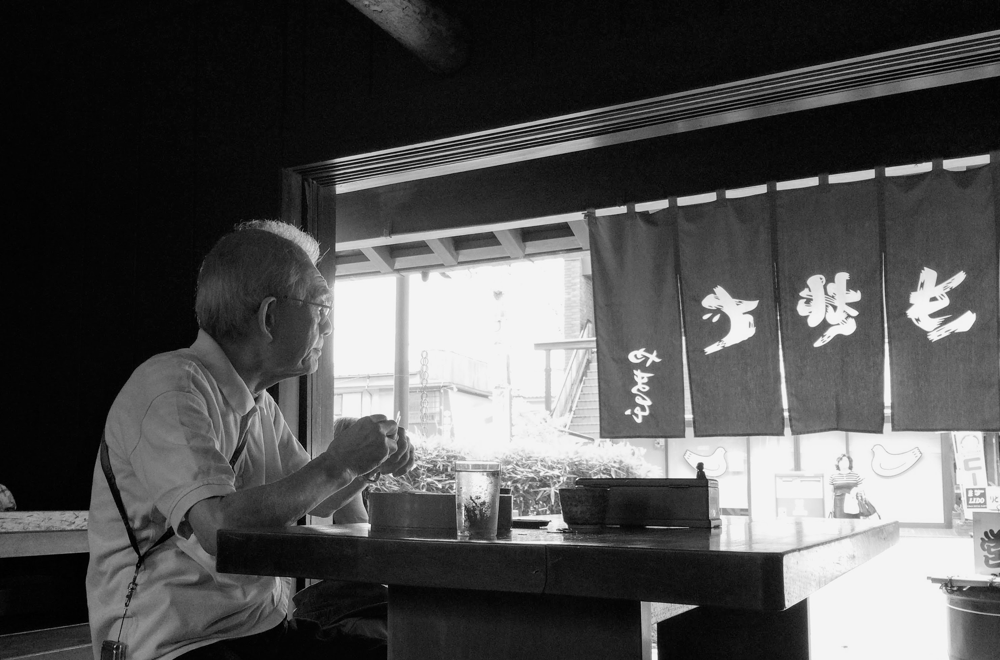

Some days I feel like this
古いアルバムめくり ありがとうってつぶやいた
(Flipping through the old album, I whispered, “Thank you.”)
The thought triggering source may be photos, words, or a song.
It doesn’t take much to trigger nostalgic thoughts
Maybe I am afraid to lose those memories.
Perhaps those are only certain things now days.
When I hear, vintage, retro, old-school, the more I want to know.

古いアルバムめくり ありがとうってつぶやいた
いつもいつも胸の中 励ましてくれる人よ
晴れ渡る日も 雨の日も 浮かぶあの笑顔
想い出遠くあせても
おもかげ探して よみがえる日は 涙そうそう
一番星に祈る それが私のくせになり
夕暮れに見上げる空 心いっぱいあなた探す
悲しみにも 喜びにも おもうあの笑顔
あなたの場所から私が
見えたら きっといつか 会えると信じ 生きてゆく
晴れ渡る日も 雨の日も 浮かぶあの笑顔
想い出遠くあせても
さみしくて 恋しくて 君への想い 涙そうそう
会いたくて 会いたくて 君への想い 涙そうそう
Here’s the Korean translation:
옛 앨범을 넘기며 “고마워”라고 속삭였어
언제나 언제나 마음속에서 나를 응원해주는 사람
맑은 날도 비 오는 날도 떠오르는 그 미소
추억이 아득히 빛바래도
그 모습을 찾아 떠오르는 날엔 눈물이 주르륵
가장 빛나는 별에게 기도하는 게 내 버릇이 되었고
저녁하늘을 올려다보며 온 마음 다해 당신을 찾곤 해
슬플 때에도 기쁠 때에도 떠오르는 그 미소
당신의 자리에서 내가
보인다면, 언젠가 만나게 될 거라 믿으며 살아갈게
맑은 날도 비 오는 날도 떠오르는 그 미소
추억이 아득히 빛바래도
그리워서 보고 싶어서 당신을 향한 마음에 눈물이 주르륵
보고 싶어서 보고 싶어서 당신을 향한 마음에 눈물이 주르륵
Here’s the English translation:
Flipping through the old album, I whispered, “Thank you.”
Always, always, in my heart, you are the one who encourages me.
On sunny days and rainy days, that smile floats into my mind.
Even if memories fade far into the distance,
On days they return, searching for your image, tears overflow.
Wishing on the brightest star has become my habit.
Looking up at the evening sky, I search for you with all my heart.
In sadness and in joy, I remember that smile.
If I could be seen from where you are,
I’d believe that someday we’d meet again and live on.
On sunny days and rainy days, that smile floats into my mind.
Even if memories fade far into the distance,
Lonely and longing, with thoughts of you, tears overflow.
Wishing to see you, wanting to meet you, with thoughts of you, tears overflow.
Let me know if you need further help!